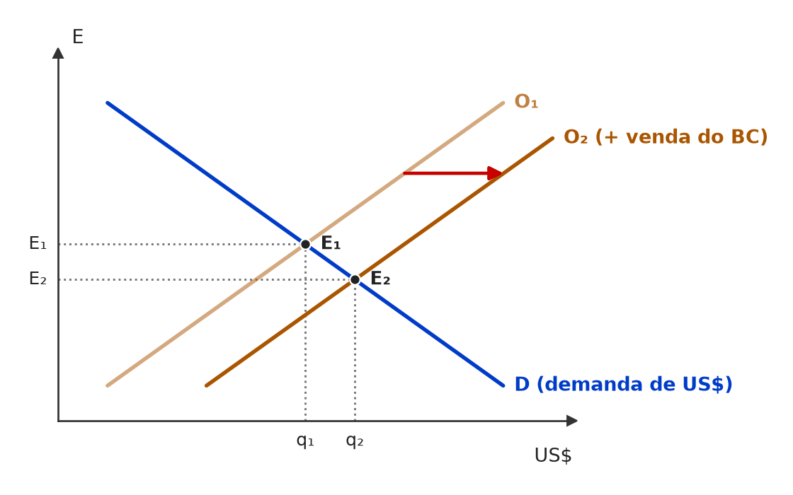

[C/E - CEBRASPE › IRBr/CACD/2026 › Reservas e intervenção]Acerca de macroeconomia aberta, regime cambial e determinação da taxa de câmbio, julgue o item subsequente, considerando o texto a seguir. Em economias abertas, choques de confiança e alterações no prêmio de risco podem afetar fluxos de capitais e pressionar a taxa de câmbio. A resposta de política econômica — incluindo-se o uso de juros, intervenção e reservas — depende, entre outros fatores, do regime cambial vigente e das restrições impostas pelo grau de mobilidade de capitais. Ademais, distinções conceituais entre taxa de câmbio nominal e taxa de câmbio real são relevantes para analisar preços relativos e competitividade, assim como para discutir mecanismos de transmissão do câmbio para a inflação. Item: São trade-offs típicos da política cambial tanto a escolha entre suavizar oscilações do câmbio e preservar reservas internacionais quanto o dilema entre manter a atividade econômica em sua meta e conter a inflação doméstica. | ⚪ ANULADO São trade-offs típicos da política cambial tanto a escolha entre suavizar oscilações do câmbio e preservar reservas internacionais quanto o dilema entre manter a atividade econômica em sua meta e conter a inflação doméstica. 🎯 Em poucas palavras: O primeiro dilema (intervir × preservar reservas) é tipicamente cambial; o segundo (atividade × inflação) é o dilema clássico da política monetária, mas também passa pelo câmbio. A ambiguidade derrubou o gabarito preliminar (ERRADO). ⚠️ Gabarito contestável: O gabarito preliminar era ERRADO e o item foi anulado. A fonte não traz a justificativa da banca. Motivo provável: a leitura que sustentava o ERRADO — atividade × inflação seria trade-off da política monetária, não da cambial — é discutível, porque o câmbio afeta as duas variáveis (exportações líquidas e repasse cambial) e a política cambial enfrenta, sim, esse dilema, sobretudo em regimes de câmbio fixo ou administrado. A redação admite as duas respostas. 📖 Destrinchando o tema:
🧐 Dissecando a redação do item: [outro: ambiguidade de enquadramento] O item soma um trade-off inequivocamente cambial a um que é primariamente monetário. A banca apostou que o candidato rejeitaria o segundo (ERRADO), mas a fronteira entre política cambial e monetária é porosa em economia aberta — e a anulação reconheceu isso. 😈 Para dificultar:
|
[C/E - CEBRASPE › IRBr/CACD/2025 › Reservas e intervenção]Acerca de regimes cambiais e da atuação do Banco Central no mercado de câmbio, julgue o item a seguir. Item: No regime de câmbio flutuante, o valor da moeda é determinado pela oferta e demanda no mercado, por isso o Banco Central do Brasil não pode intervir no mercado para evitar movimentos desordenados da taxa de câmbio que ocorrem em momentos de instabilidade. | ❌ ERRADO No regime de câmbio flutuante, o valor da moeda é determinado pela oferta e demanda no mercado, por isso o Banco Central do Brasil não pode intervir no mercado para evitar movimentos desordenados da taxa de câmbio que ocorrem em momentos de instabilidade. 🎯 Em poucas palavras: Câmbio flutuante não proíbe intervenção. O Brasil pratica flutuação administrada (suja): o Banco Central atua para conter disfuncionalidades e volatilidade excessiva, sem fixar um nível. 📖 Destrinchando o tema:
🧐 Dissecando a redação do item: [nexo indevido · restrição indevida] A primeira oração é a definição correta; o “por isso” fabrica uma consequência que não decorre dela e o “não pode” cria uma proibição inexistente. 🔥 No CACD, “câmbio flutuante” costuma vir com a ressalva da flutuação suja brasileira. 😈 Para dificultar:
✍️ Reescrita correta: No regime de câmbio flutuante, o valor da moeda é determinado pela oferta e demanda no mercado, mas isso não impede que o Banco Central do Brasil intervenha no mercado para evitar movimentos desordenados da taxa de câmbio que ocorrem em momentos de instabilidade. |
[C/E - CEBRASPE › IRBr/CACD/2025 › Reservas e intervenção]Acerca de regimes cambiais e da atuação do Banco Central no mercado de câmbio, julgue o item a seguir. Item: Em um regime de câmbio fixo, que estabelece uma taxa de câmbio específica para uma moeda em relação a outra, é indispensável, para a condução da política cambial, avaliar o volume de reservas internacionais adequado. | ✅ CERTO Em um regime de câmbio fixo, que estabelece uma taxa de câmbio específica para uma moeda em relação a outra, é indispensável, para a condução da política cambial, avaliar o volume de reservas internacionais adequado. 🎯 Em poucas palavras: Para sustentar a paridade, o banco central precisa comprar e vender divisas sempre que houver pressão; sem reservas suficientes, o regime se torna vulnerável a ataques especulativos. 📖 Destrinchando o tema:
🧐 Dissecando a redação do item: [literalidade · contraintuitivo] O “indispensável” parece exagero e convida a marcar ERRADO, mas aqui é verdadeiro: sem reservas não há como cumprir o compromisso de troca à taxa fixada. Absolutos não são sempre falsos — teste o conteúdo. 😈 Para dificultar:
|
[C/E - CEBRASPE › IRBr/CACD/2024 › Reservas e intervenção]Acerca da gestão das reservas internacionais pela autoridade monetária, julgue o item a seguir. Item: A gestão da autoridade monetária sobre os investimentos das reservas internacionais não é afetada pelos níveis de juros nem pelas paridades das moedas de investimento contra a moeda numerário de reserva de valor. | ❌ ERRADO A gestão da autoridade monetária sobre os investimentos das reservas internacionais não é afetada pelos níveis de juros nem pelas paridades das moedas de investimento contra a moeda numerário de reserva de valor. 🎯 Em poucas palavras: Reservas são uma carteira de investimentos: o retorno depende dos juros (títulos soberanos) e das paridades entre as moedas da carteira e a moeda numerário (o dólar). Ambos afetam a gestão. 📖 Destrinchando o tema:
🧐 Dissecando a redação do item: [inversão · modulador absoluto] Nega as duas variáveis que mais pesam na gestão (“não é afetada… nem…”). O jargão (“moeda numerário de reserva de valor”) intimida, mas basta pensar nas reservas como uma aplicação financeira: nenhuma aplicação ignora juros e câmbio. 😈 Para dificultar:
✍️ Reescrita correta: A gestão da autoridade monetária sobre os investimentos das reservas internacionais |
❌ [C/E - CEBRASPE › IRBr/CACD/2024 › Reservas e intervenção]Em relação à macroeconomia internacional dos fluxos de bens e de capital, julgue o item a seguir. Item: Um superávit comercial produz aumento no passivo da autoridade monetária, como um banco central, por exemplo, uma vez que as reservas cambiais são incluídas na base monetária do país. | ❌ ERRADO Um superávit comercial produz aumento no passivo da autoridade monetária, como um banco central, por exemplo, uma vez que as reservas cambiais são incluídas na base monetária do país. 🎯 Em poucas palavras: Reservas cambiais estão no ativo do banco central; a base monetária está no passivo. Se o banco central compra as divisas e emite moeda, os dois lados crescem — mas as reservas não “entram” na base. 📖 Destrinchando o tema:
🧐 Dissecando a redação do item: [troca de conceito · nexo indevido] Mistura as duas pontas do balanço: a contrapartida (moeda emitida) é que vai para a base, não as reservas. Quem lembra que “reservas sobem e base sobe juntas” marca CERTO sem ler o “uma vez que”. 🔥 O CACD cobra contabilidade do banco central com frequência. 😈 Para dificultar:
✍️ Reescrita correta: Um superávit comercial pode produzir aumento no passivo da autoridade monetária, como um banco central, por exemplo, quando este compra as divisas e emite moeda; as reservas cambiais, porém, são registradas no ativo, e não na base monetária do país. |
[C/E - Clipping › Simuladão Março/2026 › Reservas e intervenção]Acerca de regimes cambiais e do uso das reservas internacionais, julgue o item a seguir. Item: Um regime de câmbio fixo exige que o banco central mantenha reservas internacionais suficientes para sustentar a paridade da moeda doméstica frente a uma moeda estrangeira de referência, comprando ou vendendo divisas conforme necessário. | ✅ CERTO Um regime de câmbio fixo exige que o banco central mantenha reservas internacionais suficientes para sustentar a paridade da moeda doméstica frente a uma moeda estrangeira de referência, comprando ou vendendo divisas conforme necessário. 🎯 Em poucas palavras: O compromisso de trocar moedas a um preço fixo só é crível se o banco central tiver divisas para atender aos excessos de demanda do mercado. 📖 Destrinchando o tema:
🧐 Dissecando a redação do item: [literalidade] Definição operacional do regime. O verbo “exige” poderia parecer forte, mas é exatamente a condição de funcionamento. Itens errados sobre o tema dizem que o câmbio fixo “dispensa” reservas ou “preserva a autonomia monetária”. 😈 Para dificultar:
|
❌ [C/E - Clipping › Simuladão Março/2026 › Reservas e intervenção]Acerca de regimes cambiais e do uso das reservas internacionais, julgue o item a seguir. Item: Reduzir reservas internacionais sem ajustar a taxa de câmbio constitui um instrumento limitado de política cambial contracionista, pois pode impactar negativamente a confiança de investidores e gerar instabilidade financeira. | ✅ CERTO Reduzir reservas internacionais sem ajustar a taxa de câmbio constitui um instrumento limitado de política cambial contracionista, pois pode impactar negativamente a confiança de investidores e gerar instabilidade financeira. 🎯 Em poucas palavras: Vender reservas para segurar o câmbio recolhe moeda doméstica (efeito contracionista) e tem limite: reservas são finitas, e a perda contínua delas sinaliza fragilidade e convida a ataques especulativos. 📖 Destrinchando o tema:
🧐 Dissecando a redação do item: [contraintuitivo · modulador relativo] Quem pensa em reservas só como proteção acha que usá-las gera confiança e marca ERRADO. O ponto está no verbo “reduzir” e no “sem ajustar a taxa”: é a defesa de uma paridade que o mercado já questiona. O “pode” protege o item. 😈 Para dificultar:
|
[C/E - IDEG – Prof. Bozan › Pré-TPS/2026 › Reservas e intervenção]Sobre o equilíbrio de mercado e as intervenções no mercado cambial, julgue a assertiva a seguir. Item: O Banco Central tem a possibilidade de adotar políticas cambiais para ajustar a quantidade de moeda nacional e estrangeira dentro do sistema. Ao vender dólares no mercado, o Banco Central retira moeda estrangeira do sistema, o que leva à desvalorização do real. | ❌ ERRADO O Banco Central tem a possibilidade de adotar políticas cambiais para ajustar a quantidade de moeda nacional e estrangeira dentro do sistema. Ao vender dólares no mercado, o Banco Central retira moeda estrangeira do sistema, o que leva à desvalorização do real. 🎯 Em poucas palavras: Vender dólares injeta moeda estrangeira no mercado (e retira reais): o dólar fica mais abundante e o real se valoriza. 📖 Destrinchando o tema:
📈 No gráfico:  Mercado de dólares: ao vender divisas das reservas, o Banco Central soma oferta à do mercado (O₁ → O₂). A cotação E (reais por dólar) cai de E₁ para E₂ — o real se VALORIZA. 🧐 Dissecando a redação do item: [inversão] Inverte o sentido do fluxo (vender = “retirar”) e, por coerência, o efeito. Teste do bom senso: o comprador dos dólares vendidos pelo Banco Central é o mercado, que passa a ter mais divisas, não menos. 😈 Para dificultar:
✍️ Reescrita correta: O Banco Central tem a possibilidade de adotar políticas cambiais para ajustar a quantidade de moeda nacional e estrangeira dentro do sistema. Ao vender dólares no mercado, o Banco Central injeta moeda estrangeira no sistema, o que leva à valorização do real. |
[C/E - Nidi/Jacqueline Bueno › Outubro/2024 › Reservas e intervenção]A respeito dos efeitos que alterações na política monetária ou a flutuação do mercado cambial produzem sobre a base monetária e a liquidez do sistema financeiro nacional, julgue o item a seguir. Item: Uma desvalorização cambial tende a elevar o valor das reservas internacionais em moeda doméstica. Sendo assim, em resposta a uma desvalorização da moeda doméstica, haverá uma expansão da base monetária. | ❌ ERRADO Uma desvalorização cambial tende a elevar o valor das reservas internacionais em moeda doméstica. Sendo assim, em resposta a uma desvalorização da moeda doméstica, haverá uma expansão da base monetária. 🎯 Em poucas palavras: A desvalorização gera um ganho contábil nas reservas medidas em reais, mas não cria moeda: a base monetária só se expande se o Banco Central comprar ativos ou emitir moeda de fato. 📖 Destrinchando o tema:
🧐 Dissecando a redação do item: [nexo indevido] Duas afirmações ligadas por um “sendo assim” que fabrica causalidade: a primeira é verdadeira; a segunda não decorre dela. O “haverá” (certeza) reforça o erro. Pista: reavaliação contábil é efeito de estoque, base monetária é fluxo de moeda. 😈 Para dificultar:
✍️ Reescrita correta: Uma desvalorização cambial tende a elevar o valor das reservas internacionais em moeda doméstica. Ainda assim, em resposta a uma desvalorização da moeda doméstica, não haverá, por si só, expansão da base monetária. |
[C/E - Nidi/Jacqueline Bueno › Outubro/2024 › Reservas e intervenção]A respeito dos efeitos que alterações na política monetária ou a flutuação do mercado cambial produzem sobre a base monetária e a liquidez do sistema financeiro nacional, julgue certo ou errado (C ou E) os itens a seguir. Item: Mantendo todas as demais condições no mercado constantes, quando o Banco Central compra dólares das instituições bancárias e financeiras, há um aumento da base monetária. | ✅ CERTO Mantendo todas as demais condições no mercado constantes, quando o Banco Central compra dólares das instituições bancárias e financeiras, há um aumento da base monetária. 🎯 Em poucas palavras: Para comprar dólares, o BC paga em reais creditados nas reservas bancárias: o ativo (reservas internacionais) e o passivo monetário sobem juntos e a base monetária aumenta — salvo esterilização posterior. 📖 Destrinchando o tema:
🧐 Dissecando a redação do item: [literalidade · detalhe] O item reproduz o mecanismo de manual e se protege com o “mantendo todas as demais condições constantes”, que afasta a esterilização. A banca costuma inverter o sentido (venda de dólares → aumento da base) ou afirmar que a compra esterilizada expande a base. 😈 Para dificultar:
|
[C/E - Nidi/Jacqueline Bueno › Simulado Julho/2023 › Reservas e intervenção]Acerca da política cambial e das operações de esterilização, julgue o item a seguir. Item: Se o objetivo de uma política cambial é promover a valorização da taxa de câmbio sem alterar o nível de liquidez da economia em moeda nacional, um mecanismo eficiente seria a venda de determinado montante das reservas cambiais pelo Banco Central e a compra do montante equivalente em moeda nacional, realizando ainda uma ação esterilizante de compra de títulos no mercado interno em valor correspondente à operação cambial. | ✅ CERTO Se o objetivo de uma política cambial é promover a valorização da taxa de câmbio sem alterar o nível de liquidez da economia em moeda nacional, um mecanismo eficiente seria a venda de determinado montante das reservas cambiais pelo Banco Central e a compra do montante equivalente em moeda nacional, realizando ainda uma ação esterilizante de compra de títulos no mercado interno em valor correspondente à operação cambial. 🎯 Em poucas palavras: Vender divisas valoriza a moeda nacional, mas recolhe liquidez; comprar títulos no mesmo valor devolve a liquidez. É a intervenção esterilizada: muda o câmbio sem mudar a base monetária. 📖 Destrinchando o tema:
🧐 Dissecando a redação do item: [detalhe] O item é longo para esconder a direção de duas operações. Teste: a venda de divisas enxuga reais, então a esterilização precisa injetá-los — compra de títulos. A versão errada típica troca para “venda de títulos”. 😈 Para dificultar:
|
[C/E - Prof. Rodrigo Teixeira › Intensivo Pré-TPS/2023 › Reservas e intervenção]A respeito do processo de oferta de moeda, julgue o item a seguir. Item: Tudo o mais constante, há um aumento da base monetária quando o Banco Central compra dólares dos bancos, elevando as reservas internacionais, de maneira que para manter a liquidez constante, a autoridade monetária deve simultaneamente vender títulos do Tesouro no mercado aberto, o que eleva a dívida pública. | ✅ CERTO Tudo o mais constante, há um aumento da base monetária quando o Banco Central compra dólares dos bancos, elevando as reservas internacionais, de maneira que para manter a liquidez constante, a autoridade monetária deve simultaneamente vender títulos do Tesouro no mercado aberto, o que eleva a dívida pública. 🎯 Em poucas palavras: É a esterilização de compras de divisas: a compra de dólares expande a base; a venda de títulos a recolhe — e os títulos em poder do mercado aumentam a dívida bruta. 📖 Destrinchando o tema:
🧐 Dissecando a redação do item: [literalidade · detalhe] Descrição correta, passo a passo, da esterilização. O detalhe que derruba candidatos é a última oração: parece que a operação é neutra, mas ela aumenta a dívida bruta. Versões erradas trocam “vender” por “comprar” títulos. 😈 Para dificultar:
|
[C/E - Banca não identificada › Reservas e intervenção]Acerca das intervenções do Banco Central no mercado de câmbio, julgue o item a seguir. Item: Ao alienar reservas em moeda estrangeira, o Banco Central reduz a oferta de moeda doméstica disponível. Na ausência de operações de esterilização compensatórias, essa transação poderia ter como resultado a depreciação da moeda doméstica. | ❌ ERRADO Ao alienar reservas em moeda estrangeira, o Banco Central reduz a oferta de moeda doméstica disponível. Na ausência de operações de esterilização compensatórias, essa transação poderia ter como resultado a depreciação da moeda doméstica. 🎯 Em poucas palavras: Vender divisas aumenta a oferta de dólares e recolhe moeda doméstica: os dois efeitos apontam para a apreciação da moeda nacional, não para a depreciação. 📖 Destrinchando o tema:
🧐 Dissecando a redação do item: [inversão] A primeira frase (base cai) está certa e dá credibilidade ao item; o erro está na consequência, invertida. Pista: menos moeda doméstica em circulação a torna mais escassa — e, portanto, mais valiosa. 😈 Para dificultar:
✍️ Reescrita correta: Ao alienar reservas em moeda estrangeira, o Banco Central reduz a oferta de moeda doméstica disponível. Na ausência de operações de esterilização compensatórias, essa transação poderia ter como resultado a apreciação da moeda doméstica. |